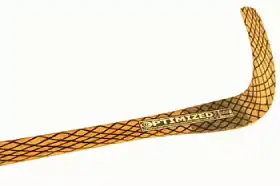
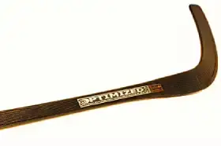
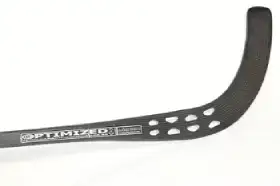

På vingar av stål
På vingar av stål
Derby/Linköping BK

Björk Gold
Björk Gold är en medeltung klubba som har en nromal flex, passar dem flesta amatörspelare

Björk Blackline
Björk Blackline är en klassisk träklubba täckt med fiberglas, för dem som gillar tyngre klubbor

Björk Gold Prof
Björk Gold Proffesinal är styvare och lättare än vanliga Björk Gold, passar dem som söker en skottklubba

Björk Grid
Björk Grid är en lättare klubba som är lätt att hantera i snabba rörelser, för dem som vill vara mer explosiva i sina rörelser på planen